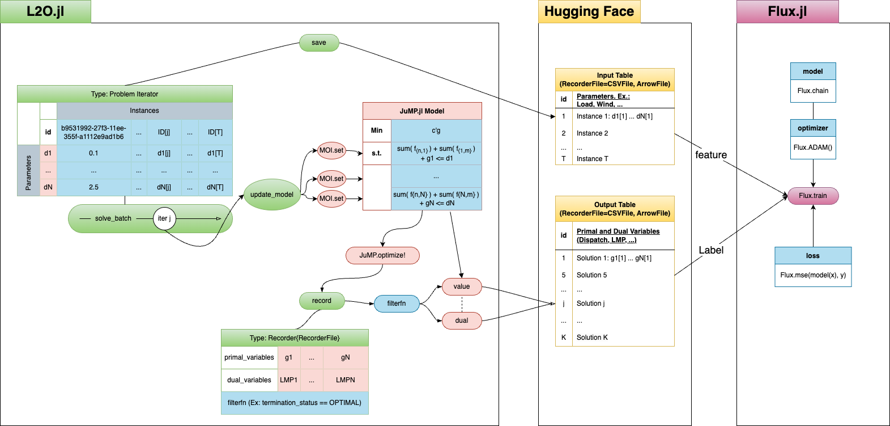

Dataset generation with solver labels
Besides the method-dispatched generate_data, LearningToOptimize writes datasets of solver solutions to CSV or Arrow files. The workflow has three parts: a ProblemIterator holds the parameter values of every instance, a Recorder chooses what to save, and solve_batch solves every instance and writes one row per successful solve. Every instance gets a UUID, which links input and output files.

The code on this page runs as one script in an environment with LearningToOptimize, JuMP, HiGHS, CSV, DataFrames, Flux, MLJ, MLJFlux and Optimisers.
The problem iterator
using LearningToOptimize, JuMP, HiGHS
model = Model(HiGHS.Optimizer)
set_silent(model)
@variable(model, x)
p = @variable(model, p in MOI.Parameter(1.0))
@constraint(model, cons, x + p >= 3)
@objective(model, Min, 2x)
parameter_values = Dict(p => collect(1.0:10.0))
problem_iterator = ProblemIterator(parameter_values)Save the parameter values of the iterator with
save(problem_iterator, "input_file", CSVFile)which writes input_file.csv:
| id | p |
|---|---|
1d08db14-… | 1.0 |
1d08db70-… | 2.0 |
| … | … |
1d08dc2e-… | 10.0 |
load("input_file", CSVFile) reads the file back as a DataFrame.
Samplers
Instead of listing parameter values by hand, sample them around the current values of the parameters with the predefined samplers (box_sampler, line_sampler, scaled_distribution_sampler) or with your own function that takes the vector of parameters and returns a matrix with one row per parameter and one column per instance. general_sampler combines several samplers. Given a model file that JuMP's read_from_file can read (tested with MathOptFormat), it samples the parameters and saves them:
write_to_file(model, "model.mof.json")
sampled_iterator = general_sampler(
"model.mof.json";
samplers = [
(original_parameters) -> scaled_distribution_sampler(original_parameters, 100),
(original_parameters) -> line_sampler(original_parameters, 1.01:0.01:1.25),
(original_parameters) -> box_sampler(original_parameters, 30),
],
save_file = "sampled_input",
filetype = CSVFile,
)The result is a ProblemIterator whose parameter values are also in sampled_input.csv.
The recorder
Choose what to record and solve every instance:
recorder = Recorder{CSVFile}("output_file"; primal_variables = [x], dual_variables = [cons])
solve_batch(problem_iterator, recorder)This writes output_file.csv, one row per successful solve:
| id | x | dual_cons | objective | time | status | primal_status | dual_status |
|---|---|---|---|---|---|---|---|
1d08db14-… | 2.0 | 2.0 | 4.0 | 0.0002 | OPTIMAL | FEASIBLE_POINT | FEASIBLE_POINT |
1d08db70-… | 1.0 | 2.0 | 2.0 | 0.0001 | OPTIMAL | FEASIBLE_POINT | FEASIBLE_POINT |
| … | … | … | … | … | … | … | … |
To write Arrow files instead, use Recorder{ArrowFile}; see Reading from and compressing Arrow files.
Training a proxy on the saved data
With Flux, join inputs and outputs on the instance id (only successful solves have an output row) and train in Flux's explicit style:
using CSV, DataFrames, Flux
input_data = CSV.read("input_file.csv", DataFrame)
output_data = CSV.read("output_file.csv", DataFrame)
data = innerjoin(input_data, output_data; on = :id)
X = Matrix{Float32}(data[!, [:p]])' # parameters × instances
Y = Matrix{Float32}(data[!, [:x, :dual_cons]])' # predicted solution × instances
nn = Chain(Dense(size(X, 1) => 64, relu), Dense(64 => 32, relu), Dense(32 => size(Y, 1)))
opt_state = Flux.setup(Flux.Adam(1e-2), nn)
for epoch = 1:200
Flux.train!((m, x, y) -> Flux.mse(m(x), y), nn, [(X, Y)], opt_state)
end
predictions = nn(X)With MLJ, use the MultitargetNeuralNetworkRegressor of MLJFlux and the FullyConnectedBuilder of this package:
using MLJ, MLJFlux, Optimisers
input_features = data[!, [:p]]
output_variables = data[!, [:x, :dual_cons]]
regressor = MultitargetNeuralNetworkRegressor(;
builder = FullyConnectedBuilder([64, 32]),
rng = 123,
epochs = 20,
optimiser = Optimisers.Adam(),
)
mach = machine(regressor, input_features, output_variables)
fit!(mach; verbosity = 0)
predict(mach, input_features)Evaluating the proxy
general_evaluator evaluates a trained MLJ machine on the instances of a ProblemIterator. It returns a NamedTuple with the objective value and the infeasibility of the predicted solution for each instance, and the total inference time and allocated memory.
evaluation = general_evaluator(problem_iterator, mach)